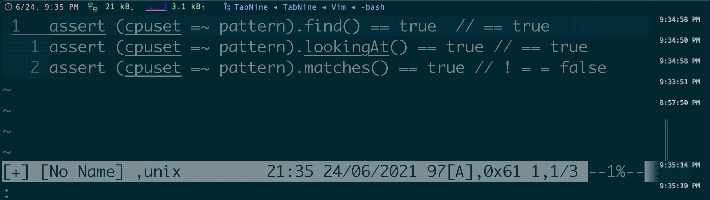
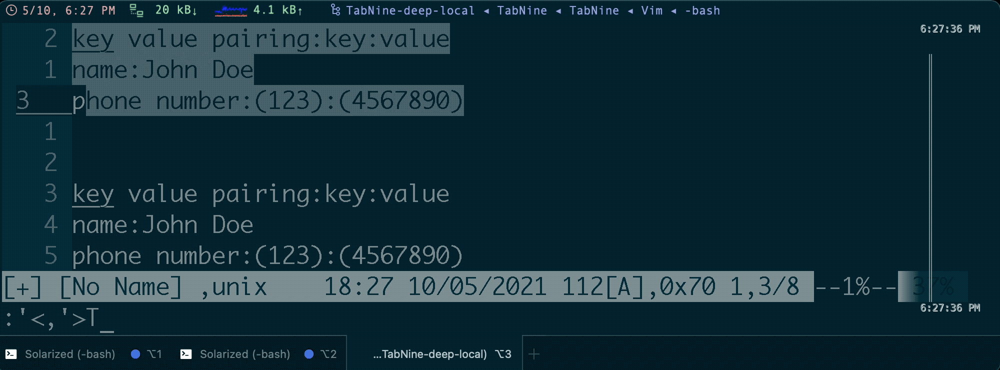
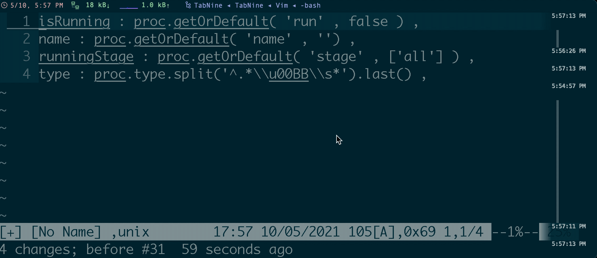
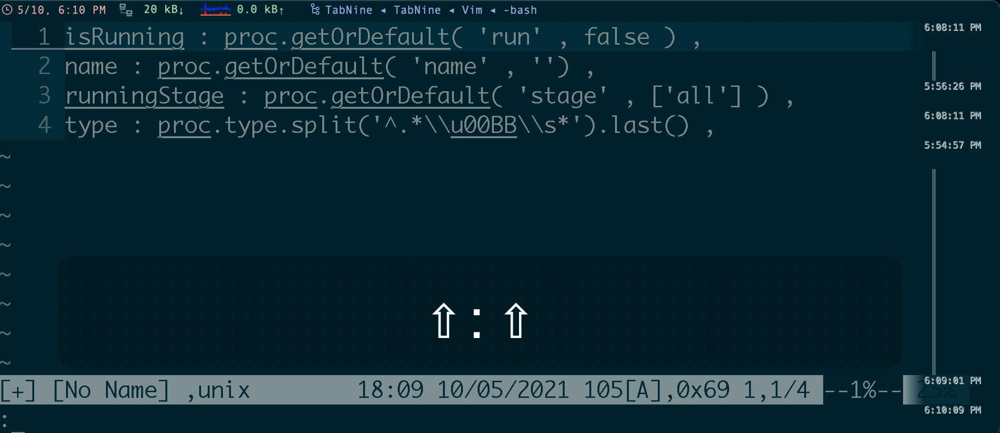
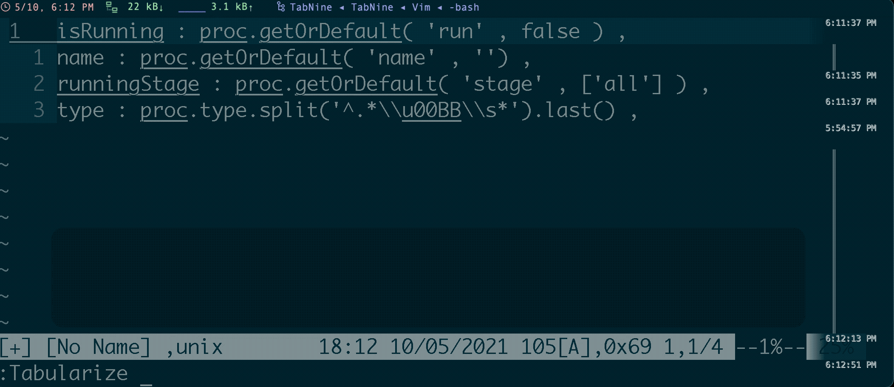
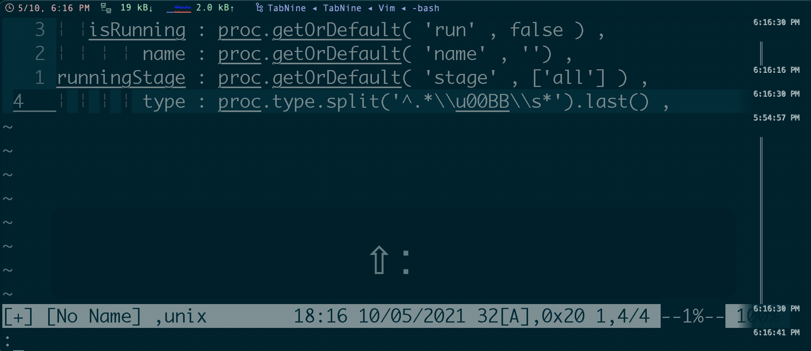

Table of Contents generated with DocToc
references:
Tabularize
[!TIP]
- Tabular cheatsheet
- align with first space :
/^\s*\S\+\zs/l0c1l0- align the second
=to left :/^\(.\{-}\zs=\)\{2}/l1l0
| specifier | comments |
|---|---|
l<N> |
left-align (with N spaces padding) |
r<N> |
right-align (with N spaces padding) |
c<N> |
center-align (with N spaces padding) |
:Tabularize /,/r1c1l0 means:
- splitting fields on commas (
:) - print everything before the first comma right aligned, then 1 space
- then the comma center aligned, then 1 space,
- then everything after the comma left aligned.
including the <sep>
align to left
:Tabularize /<sep>- or
:Tabularize /<sep>/l1
- or
align to center
:Tabularize /<sep>/r1c1l0
1.4.3.1 -- tabularize
align without <sep>
:Tabularize /<sep>\zs/<specifier>
align on first matche
align the first
::Tabularize /^[^:]*\zs::Tabularize /:.* 1.4.3.2 -- tabularize-5 -
only for default left-alignemnt. Not support customized right/middle alignment. i.e.:
/r1c1l0command! -nargs=1 -range First exec <line1> . ',' . <line2> . 'Tabularize /^[^' . escape(<q-args>, '\^$.[?*~') . ']*\zs' . escape(<q-args>, '\^$.[?*~')
align with the N pattern
i.e.: the second match (
=)
- refer to matches the N pattern
:Tabularize /^\(.\{-}\zs=\)\{N}/
|
`^` means start of the line
or with
\v(very magic)reference:
:Tabularize /\v^(.{-}\zs\=){N}/<specifier>for every N matches
: Tabularize /\(.\{-}\zs=\)\{N}/<specifier> | no `^` means every `{N}` matchesor
:Tabularize /\v(.{-}\zs\=){N}/<specifier>
align on specific symbol
pre condition:
- align the first
:and last matches,as below:[ isRunning : proc.getOrDefault( 'run' , false ) , name : proc.getOrDefault( 'name' , '') , runningStage : proc.getOrDefault( 'stage' , ['all'] ) , type : proc.type.split('^.*\\u00BB\\s*').last() , ]
first :
reference: via
/^[^;]*\zs:/^[^;]*\zs:/r1c1l0/^[^;]*/r1c1l0
/^[^:]*\zs:isRunning : proc.getOrDefault( 'run' , false ) , name : proc.getOrDefault( 'name' , '') , runningStage : proc.getOrDefault( 'stage' , ['all'] ) , type : proc.type.split('^.*\\u00BB\\s*').last() , 
/^[^:]*\zs/r1c1l0isRunning : proc.getOrDefault( 'run' , false ) , name : proc.getOrDefault( 'name' , '') , runningStage : proc.getOrDefault( 'stage' , ['all'] ) , type : proc.type.split('^.*\\u00BB\\s*').last() ,/^[^:]*\zs:/r1c1l0isRunning : proc.getOrDefault( 'run' , false ) , name : proc.getOrDefault( 'name' , '') , runningStage : proc.getOrDefault( 'stage' , ['all'] ) , type : proc.type.split('^.*\\u00BB\\s*').last() , 1.4.3.4 -- tabularize-3 /^[^:]*/r1c1l0isRunning : proc.getOrDefault( 'run' , false ) , name : proc.getOrDefault( 'name' , '') , runningStage : proc.getOrDefault( 'stage' , ['all'] ) , type : proc.type.split('^.*\\u00BB\\s*').last() ,/^[^:]*:/r1c1l0:isRunning : proc.getOrDefault( 'run' , false ) , name : proc.getOrDefault( 'name' , '') , runningStage : proc.getOrDefault( 'stage' , ['all'] ) , type : proc.type.split('^.*\\u00BB\\s*').last() ,
last ,
tips:
- actually the pattern not matches with the final
,, but matches with)<.*> ,sample code:
isRunning : proc.getOrDefault( 'run' , false ) , name : proc.getOrDefault( 'name' , '') , runningStage : proc.getOrDefault( 'stage' , ['all'] ) , type : proc.type.split('^.*\\u00BB\\s*').last() ,
/)[^,]*\zs,isRunning : proc.getOrDefault( 'run' , false ) , name : proc.getOrDefault( 'name' , '') , runningStage : proc.getOrDefault( 'stage' , ['all'] ) , type : proc.type.split('^.*\\u00BB\\s*').last() ,or even better align
:1,3Tabularize /,or:'<,'>Tabularize /,isRunning : proc.getOrDefault( 'run' , false ) , name : proc.getOrDefault( 'name' , '') , runningStage : proc.getOrDefault( 'stage' , ['all'] ) , type : proc.type.split('^.*\\u00BB\\s*').last() ,:Tabularize /)[^,]*\zs,isRunning : proc.getOrDefault( 'run' , false ) , name : proc.getOrDefault( 'name' , '') , runningStage : proc.getOrDefault( 'stage' , ['all'] ) , type : proc.type.split('^.*\\u00BB\\s*').last() ,
 1.4.3.5 -- tabularize-4
recommended plugins
indentLine
" install
Bundle 'Yggdroot/indentLine'
" settings
nnoremap <leader>idl :IndentLineEnable<CR>
let g:indentLine_enabled = 1
let g:indentLine_color_gui = "#282828"
let g:indentLine_color_term = 239
let g:indentLine_indentLevel = 20
let g:indentLine_showFirstIndentLevel = 1
let g:indentLine_color_tty = 0
let g:indentLine_faster = 1
let g:indentLine_concealcursor = 'inc'
let g:indentLine_conceallevel = 2
if has('gui_running') || 'xterm-256color' == $TERM
let g:indentLine_char = '¦'
elseif has('win32')
let g:indentLine_color_term = 8
let g:indentLine_char = '|'
else
let g:indentLine_color_tty_dark = 0
let g:indentLine_char = '¦'
endif
autopairs
Bundle 'marslo/auto-pairs'
" or
" Bundle 'marslo/auto-pairs'
" settings
let g:AutoPairs = {'(':')', '[':']', '{':'}', '<':'>',"'":"'",'"':'"', '`':'`'}
let g:AutoPairsParens = {'(':')', '[':']', '{':'}', '<':'>'}
let g:AutoPairsFlyMode = 0
let g:AutoPairsShortcutBackInsert = '<M-b>'
rainbow
" install
Bundle 'luochen1990/rainbow'
" settings
let g:rainbow_active = 1
let g:rainbow_operators = 1
let g:rainbow_conf = {
\ 'guifgs' : ['#DC322F', '#268bd2', '#6c71c4', '#B22222', '#C0FF3E', '#6A5ACD', '#EEC900', '#9A32CD', '#EE7600', '#98fb98'],
\ 'ctermfgs' : 'xterm-256color' == $TERM ? ['9', '69', '178', '196', '112', '208', '129', '166', '84', '99'] : ['lightblue', 'lightgreen', 'yellow', 'red', 'magenta'],
\ 'parentheses': [['(',')'], ['\[','\]'], ['{','}']],
\ 'separately': {
\ '*': {},
\ 'markdown': {
\ 'parentheses_options': 'containedin=markdownCode contained',
\ },
\ 'css': {
\ 'parentheses': [['(',')'], ['\[','\]']],
\ },
\ 'scss': {
\ 'parentheses': [['(',')'], ['\[','\]']],
\ },
\ 'html': {
\ 'parentheses': [['(',')'], ['\[','\]'], ['{','}']],
\ },
\ 'stylus': {
\ 'parentheses': ['start=/{/ end=/}/ fold contains=@colorableGroup'],
\ }
\ }
\}
tabular
" install
Bundle 'godlygeek/tabular'
" settings
noremap <Leader>tb :TableModeToggle<CR>
let g:table_mode_corner='|'
let g:table_mode_header_fillchar='-'
let g:table_mode_corner_corner='|'
function! s:isAtStartOfLine(mapping)
let text_before_cursor = getline('.')[0 : col('.')-1]
let mapping_pattern = '\V' . escape(a:mapping, '\')
let comment_pattern = '\V' . escape(substitute(&l:commentstring, '%s.*$', '', ''), '\')
return (text_before_cursor =~? '^' . ('\v(' . comment_pattern . '\v)?') . '\s*\v' . mapping_pattern . '\v$')
endfunction
inoreabbrev <expr> <bar><bar>
\ <SID>isAtStartOfLine('\|\|') ?
\ '<c-o>:TableModeEnable<cr><bar><space><bar><left><left>' : '<bar><bar>'
inoreabbrev <expr> __
\ <SID>isAtStartOfLine('__') ?
\ '<c-o>:silent! TableModeDisable<cr>' : '__'
let g:tabular_loaded = 1
if exists(":Tabularize")
nmap <Leader>a= :Tabularize /=<CR>
vmap <Leader>a= :Tabularize /=<CR>
nmap <leader>a: :Tabularize /:\zs<CR>
vmap <leader>a: :Tabularize /:\zs<CR>
inoremap <silent> <Bar> <Bar><Esc>:call <SID>table_auto_align()<CR>
function! s:table_auto_align()
let p = '^\s*|\s.*\s|\s*$'
if exists(':Tabularize') && getline('.') =~# '^\s*|'
\ && (getline(line('.')-1) =~# p || getline(line('.')+1) =~# p)
let column = strlen(substitute(getline('.')[0:col('.')],'[^|]','','g'))
let position = strlen(matchstr(getline('.')[0:col('.')],'.*|\s*\zs.*'))
Tabularize/|/l1
normal! 0
call search(repeat('[^|]*|',column).'\s\{-\}'.repeat('.',position),'ce',line('.'))
endif
endfunction
endif